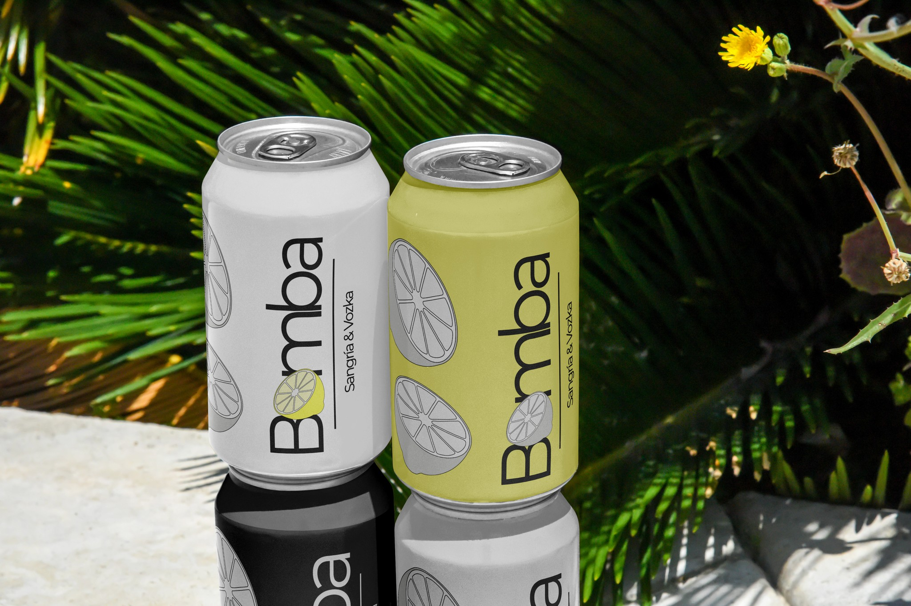
Prefiero el ruido que
rompe el molde a la
perfección que nadie recuerda.
ClaudiaLópez-Asiaín
© PROJECTS
[ PRTFL® — 26 ]
CLASSS


Alhaja
Como diría mi abuela...
Creamos joyas artesanales que no solo se llevan, se sienten. Objetos que se convierten en símbolos de lo que somos y sentimos. Cada pieza es un recuerdo heredado y reinventado.
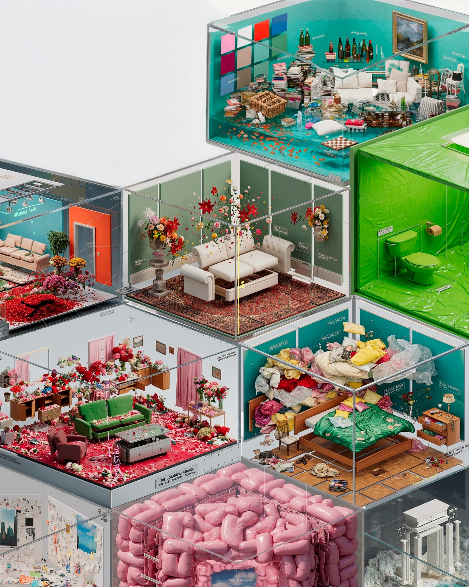
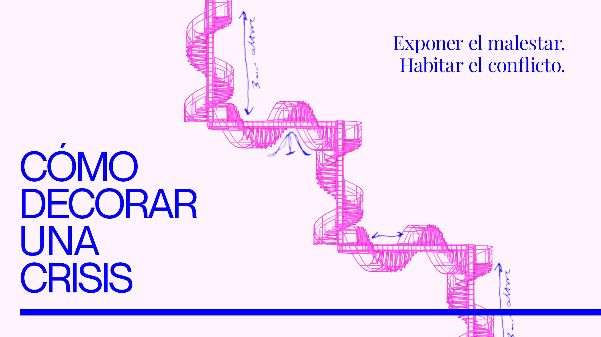
Cómo decorar una crisis
Cómo decorar una crisis
Exposición colectiva sobre el derrumbe contemporáneo. Un proyecto que traduce estados emocionales inestables en habitaciones generadas en 3D, catalogadas como si fueran piezas de decoración.
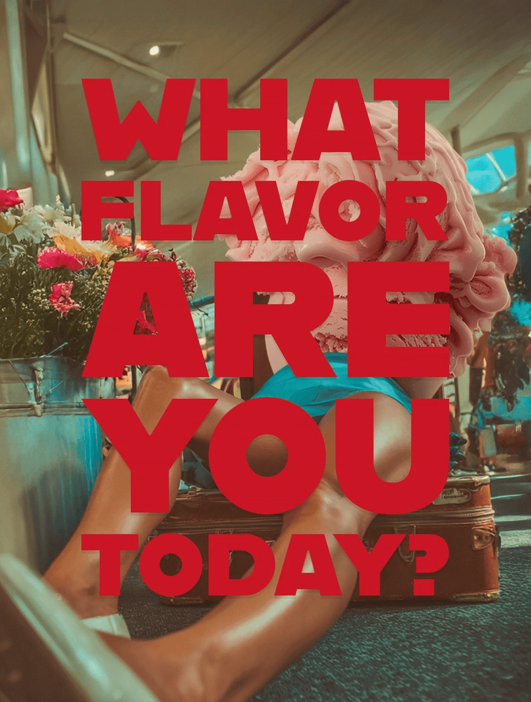
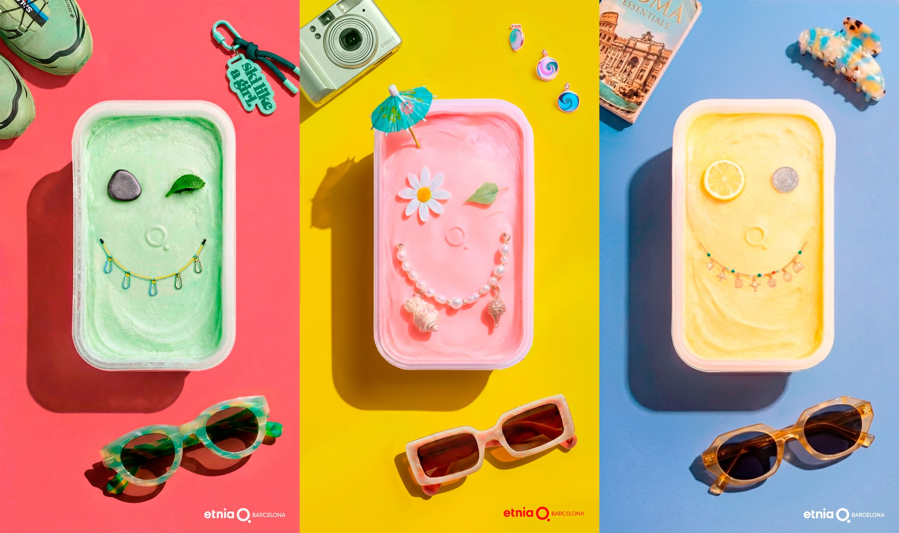
Etnia Barcelona
Y tú, ¿qué sabor eres?
Una campaña para Etnia Barcelona que transforma la personalidad en sabor, utilizando color, humor y metáforas visuales para representar distintos moods del verano.


Cuidar Madrid
Cuidar Madrid Sienta Tan Bien
Una campaña que propone una mirada positiva sobre el civismo urbano, entendiendo el cuidado de la ciudad como bienestar colectivo.
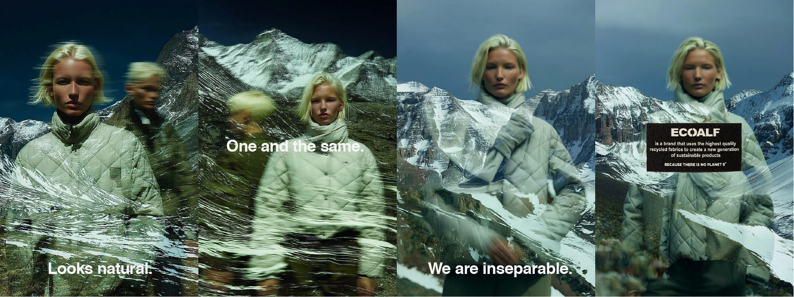

ecoalf
INSEPARABLES
Una campaña conceptual para Ecoalf que plantea una reflexión simple: el destino del ser humano y el de la naturaleza están inevitablemente conectados.
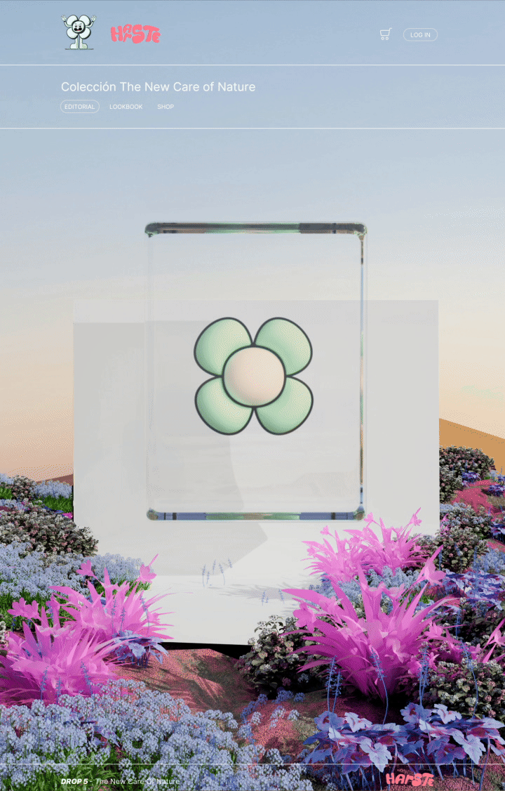

harste
The New Care of Nature
Una marca que explora una nueva relación entre naturaleza y tecnología a través de un universo visual digital.
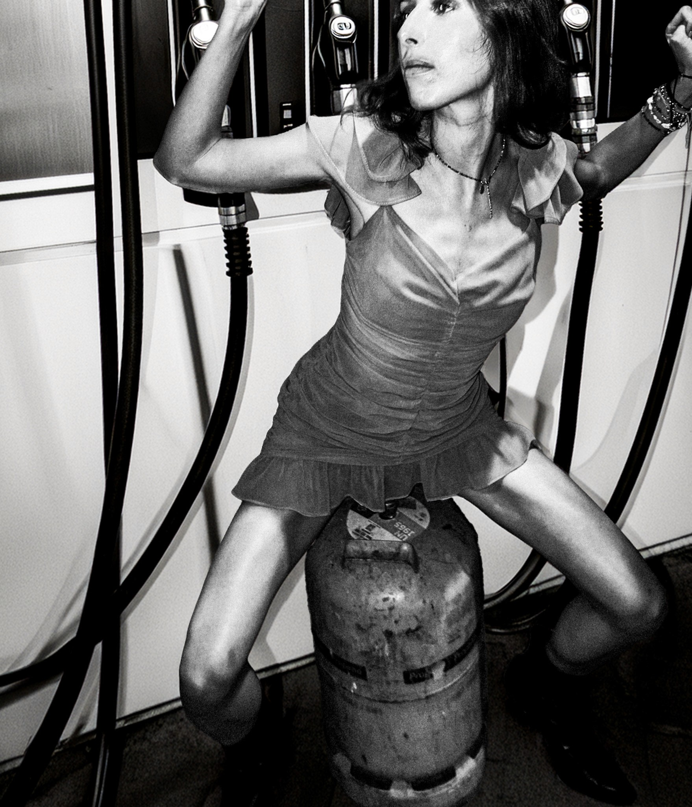
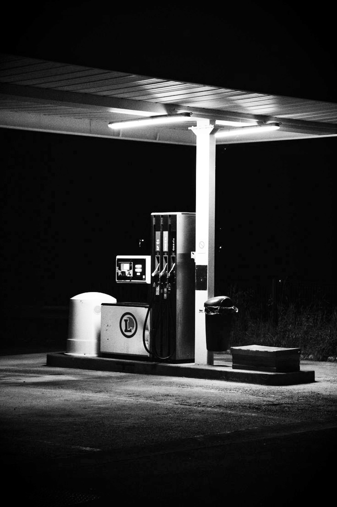
DieselxKlein
FULL TANK
Una reinterpretación del lenguaje visual provocador de Diesel que explora el impulso, la actitud y la estética de las malas decisiones.
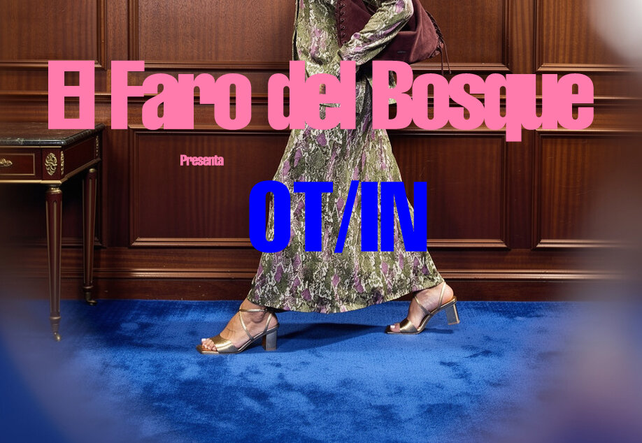
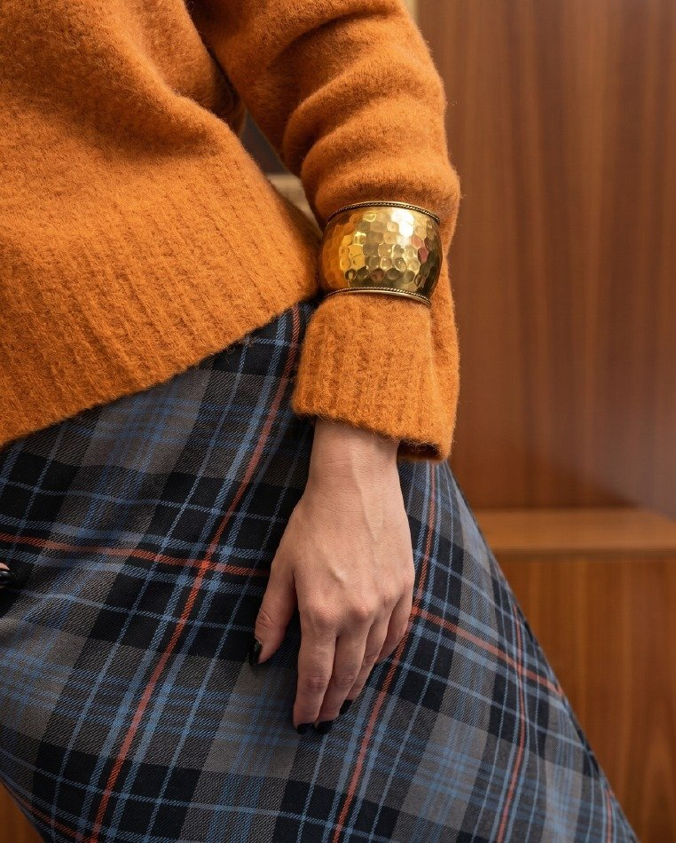
Aquí Estamos
El Faro del Bosque — OI26
Campaña OI26 para El Faro del Bosque. Las fareras —las que cuidan la luz, las que vuelven cada temporada— vistiendo la colección en los interiores cálidos y las alfombras de color que definen la marca.
© GALLERY
[ PRTFL® — 26 ]
CLASSS
Gallery
[5]© SKILLS
[ PRTFL® — 26 ]
CLASSS
Skills
[4][01]
Art Direction
Desarrollo conceptos que se convierten en imágenes claras y memorables, capaces de sostener campañas con identidad propia.
[02]
Brand Identity
Construyo universos visuales coherentes que permiten a las marcas expresarse con carácter y una personalidad reconocible.
[03]
3D & Visual Experimentation
Exploro el potencial del 3D para ampliar el lenguaje visual y generar imágenes inesperadas con un enfoque experimental.
[04]
Editorial Design
Diseño narrativas visuales de imagen, tipografía y ritmo editorial trabajan juntos para construir significado.
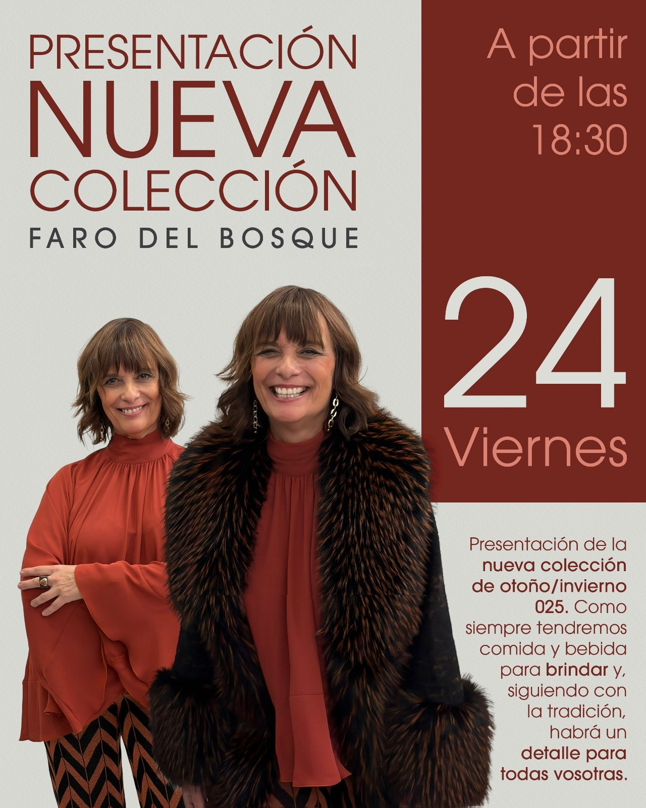
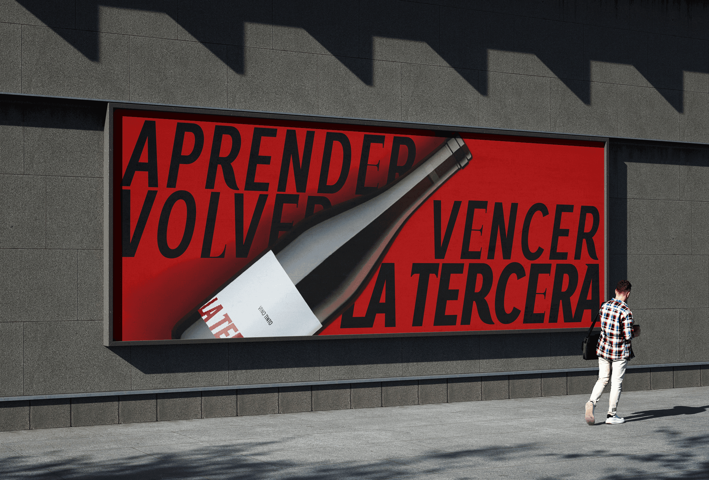
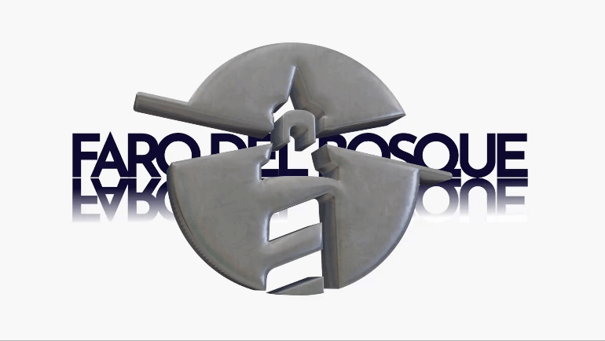
© LABBB
[ PRTFL® — 26 ]
CLASSS
Labbb
[<3]Descubre mi
propio labbboratorio
de ideas
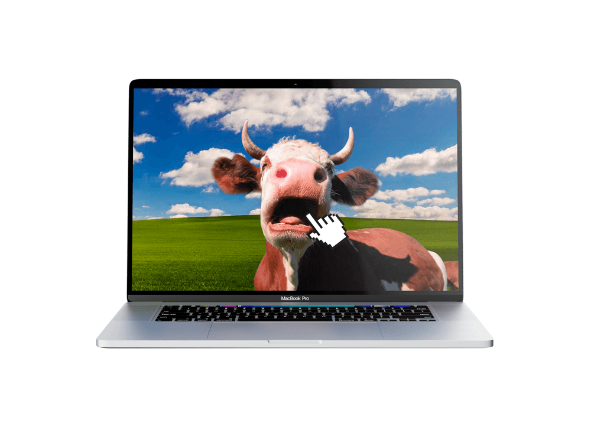